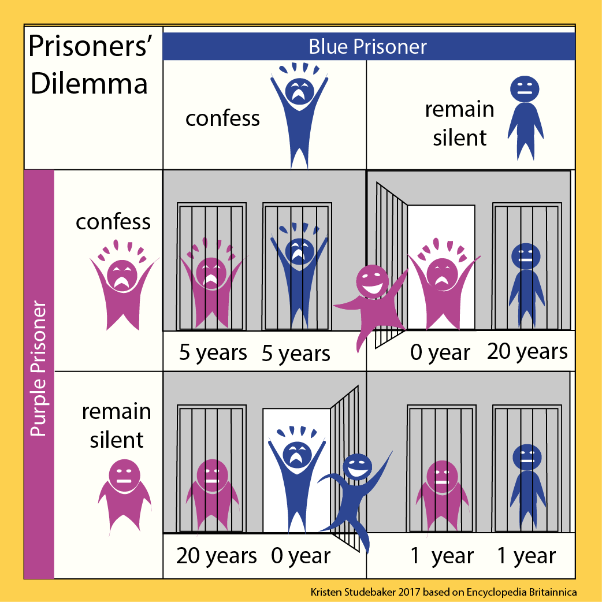

Canvas Applications with the Human Brain
Neuroeconomics is a hybrid of neuroscience, economics, and psychology. This interdisciplinary field seeks to explain human decision making, the ability to process multiple alternatives and to follow a course of action. It studies how economic behavior can shape our understanding of the brain, and how neuroscientific discoveries can constrain and guide models of economics.
Behavioral economics studies the effects of psychological, social, cognitive, and emotional factors on the economic decisions of individuals and institutions and the consequences for market prices, returns, and resource allocation. Behavioral economics is concerned with the bounds of rationality of economic agents and includes how market decisions are made and the mechanisms that drive public choice.
Most of our decisions are made under some conditions of risk. Utility maximization is used to explain decision making under risk. The theory assumes that humans are rational and will assess options based on the expected utility they will gain. However, there have been found to be many inconsistencies, such as the human tendency to be risk-averse or risk-seeking. There seem to be multiple brain areas involved in dealing with situations of uncertainty.
The prefrontal cortex is involved in reasoning and understanding; the neurotransmitter dopamine may transmit information about uncertainty throughout the cortex. Dopamine may be an important mediator of risky behavior.
Intertemporal choices are decisions that involve costs and benefits that are distributed over time. Neuroeconomic research in intertemporal choice suggests that serotonin and cortisol play in important role in modulating future discounting. This may explain why drug addicts seem to discount the future negative effects of taking drugs and opt for the immediate positive reward.
In the Prisoner's Dilemma, the payoff for a particular choice is dependent not only on the decision of the individual but also on that of another individual playing the game. And individual can choose to either cooperate with her partner or defect against the partner.
Two members of a criminal gang are arrested and imprisoned. Each prisoner is in solitary confinement with no means of communicating with the other. The prosecutors lack sufficient evidence to convict the pair on the principal charge. They hope to get both sentenced to a year in prison on a lesser charge. Simultaneously, the prosecutors offer each prisoner a bargain. Each prisoner is given the opportunity either to: betray the other by testifying that the other committed the crime, or to cooperate with the other by remaining silent. The offer is:
If Blue Prisoner and Purple Prisoner each remain silent, each of them serves 1 year in prison. If Blue Prisoner betrays Purple Prisoner but Purple Prisoner remains silent, Blue Prisoner will be set free and Purple Prisoner will serve 20 years in prison (and vice versa). If Blue Prisoner and Purple Prisoner both confess, both of them will only serve 5 years in prison (on the lesser charge).
